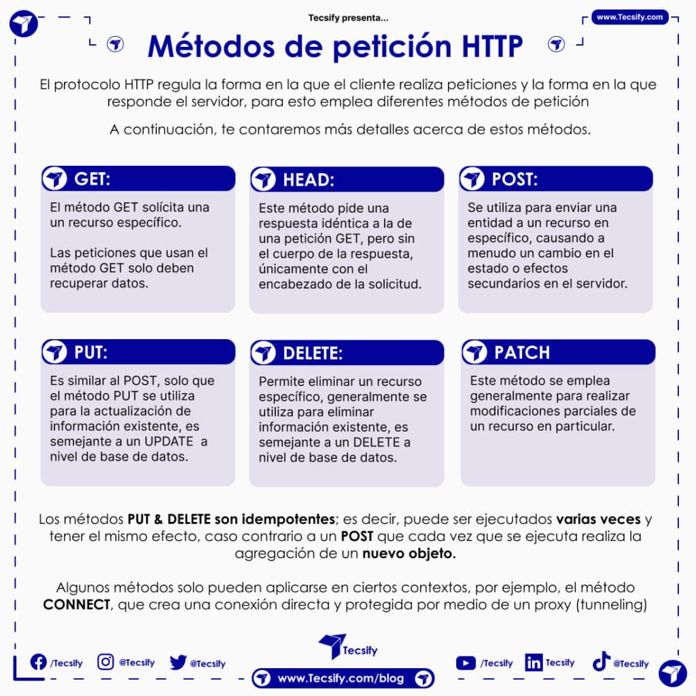
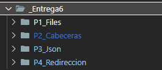

UD 5 Programación y herramientas web
RA 6 Desarrolla aplicaciones web de acceso a almacenes de datos, aplicando medidas para mantener la seguridad y la integridad de la información.
- a) Se han identificado los mecanismos disponibles para el mantenimiento de la información que concierne a un cliente Web concreto y se han señalado sus ventajas.
- b) Se han utilizado sesiones para mantener el estado de las aplicaciones Web.
- c) Se han utilizado «cookies» para almacenar información en el cliente Web y para recuperar su contenido.
- d) Se han identificado y caracterizado los mecanismos disponibles para la autentificación de usuarios.
- e) Se han escrito aplicaciones que integren mecanismos de autentificación de usuarios.
- f) Se han realizado adaptaciones a aplicaciones Web existentes como gestores de contenidos u otras.
- g) Se han utilizado herramientas y entornos para facilitar la programación, prueba y depuración del código.
Índice
- Envío HTTP
- Variables Supeglobales
- Envío HTTP
1. Variables Superglobales en PHP
Las variables superglobales en PHP son arrays asociativos predefinidos que permiten acceder a información de la solicitud HTTP, variables del entorno, archivos, sesiones, entre otros.
- Están disponibles en todo el ámbito del script (global y local).
- No requieren ser declaradas previamente.
Principales Variables Superglobales
$_GET: Contiene los datos enviados mediante el método HTTPGET.$_POST: Contiene los datos enviados mediante el método HTTPPOST.$_REQUEST: Contiene los datos enviados porGET,POSToCOOKIE.$_FILES: Contiene los archivos cargados desde un formulario HTML.-
$_SERVER: Información sobre el servidor y el entorno de ejecución.
Nuevas para ver en este tema:
6. $_SESSION : Contiene las variables de sesión del usuario.
7. $_COOKIE : Contiene las cookies enviadas al cliente o al servidor.
Las variables superglobales en PHP permiten manejar eficientemente datos enviados desde formularios y cargar archivos. Este enfoque es fundamental para aplicaciones web que requieren interacción del usuario y manejo de datos dinámicos, como una aplicación de reserva de vuelos.
Ya has usado alguna de ellas como GET, POST, REQUEST o SERVER.
<?php
echo $_SERVER["PHP_SELF"]."<br>"; // /u4/401server.php
echo $_SERVER["SERVER_SOFTWARE"]."<br>"; // Apache/2.4.46 (Win64) OpenSSL/1.1.1g PHP/7.4.9
echo $_SERVER["SERVER_NAME"]."<br>"; // localhost
echo $_SERVER["REQUEST_METHOD"]."<br>"; // GET
echo $_SERVER["REQUEST_URI"]."<br>"; // /u4/401server.php?heroe=Batman
echo $_SERVER["QUERY_STRING"]."<br>"; // heroe=Batman
?>

$_FILES "Subiendo archivos"
Se almacenan en el servidor en el array $_FILES con el nombre del campo del tipo file del formulario.
Cada archivo cargado en $_FILES tiene:
name: nombretmp_name: ruta temporalsize: tamaño en bytestype: tipo MIMEerror: si hay error, contiene un mensaje. Si ok → 0.
💻Programa 1: Subiendo archivos
!!! Success "Subiendo archivos" ( RUTA UD5/P1_File/...)
Ejecuta y personaliza el código de[Subir Fichero](1b-subirFichero.md) en la carpeta 1Cabeceras/subirFichero
/ ... y comprueba elementos nuevos como es el caso de la variable superflobal FILES

2. Envío HTTP
El envío de solicitudes y respuestas HTTP en PHP es fundamental para la comunicación entre el cliente (navegador) y el servidor.
- A través de estas solicitudes, podemos enviar datos, recuperar información, manejar formularios, realizar redirecciones y gestionar recursos.

Link al artículo anterior https://www.cloudflare.com/es-es/learning/ddos/glossary/hypertext-transfer-protocol-http/

2.1 Tipos de Solicitudes HTTP
Los métodos más comunes que se utilizan en PHP para manejar solicitudes HTTP son:
- GET : Solicita datos del servidor.
- POST : Envía datos al servidor para ser procesados.
- PUT : Envía datos al servidor para actualizar un recurso.
- DELETE : Solicita la eliminación de un recurso en el servidor.

Repasemos el envío de Datos al Servidor
a) Solicitud GET
- Se utiliza para enviar parámetros en la URL.
- Generalmente usado para recuperar información.
- No es adecuado para enviar datos sensibles, ya que se muestran en la URL.
Ejemplo:
Formulario HTML que envía datos con GET:
<form action="procesar.php" method="GET">
<input type="text" name="nombre" placeholder="Introduce tu nombre">
<input type="submit" value="Enviar">
</form>
Procesamiento en PHP:
// procesar.php
if (isset($_GET['nombre'])) {
$nombre = htmlspecialchars($_GET['nombre']);
echo "Hola, $nombre";
}
b) Solicitud POST
- Se utiliza para enviar datos en el cuerpo de la solicitud.
- Más seguro que GET para enviar información sensible.
- Adecuado para enviar grandes cantidades de datos.
Ejemplo:
Formulario HTML que envía datos con POST:
<form action="procesar.php" method="POST">
<input type="text" name="nombre" placeholder="Introduce tu nombre">
<input type="submit" value="Enviar">
</form>
Procesamiento en PHP:
// procesar.php
if (isset($_POST['nombre'])) {
$nombre = htmlspecialchars($_POST['nombre']);
echo "Hola, $nombre";
}
Recuperación de Datos en PHP
PHP ofrece variables superglobales para acceder a los datos enviados en las solicitudes HTTP:
$_GET: Contiene los datos enviados a través del método GET.$_POST: Contiene los datos enviados a través del método POST.$_REQUEST: Contiene datos enviados tanto por GET como por POST.
Redirección con HTTP en PHP
La redirección permite enviar al usuario a otra página o URL.
Ejemplo de redirección:
header("Location: https://www.google.com");
exit(); // Detener la ejecución del script
2.2 Envío de JSON en una Solicitud HTTP
PHP puede enviar y recibir datos en formato JSON, especialmente útil para aplicaciones web modernas.
Enviar datos JSON en una respuesta:
header('Content-Type: application/json');
$data = [
"nombre" => "Juan",
"edad" => 25,
"ciudad" => "Madrid"
];
echo json_encode($data);
Recibir datos JSON en una solicitud POST:
// Obtener datos JSON enviados en el cuerpo de la solicitud POST
$json = file_get_contents('php://input');
$data = json_decode($json, true);
if ($data) {
echo "Nombre: " . $data['nombre'];
echo "Edad: " . $data['edad'];
}
2.3 Manejo de Errores HTTP
Es importante manejar errores de solicitud y enviar códigos de estado HTTP adecuados.
Ejemplo: Enviar un código de error 404:
header("HTTP/1.1 404 Not Found");
echo "Página no encontrada";
Ejemplo: Enviar un código 500 (Error Interno del Servidor):
header("HTTP/1.1 500 Internal Server Error");
echo "Error interno en el servidor";
- PHP permite manejar solicitudes HTTP de manera sencilla a través de las variables superglobales (
$_GET,$_POST,$_REQUEST). - Las cabeceras HTTP controlan el tipo de contenido, redirecciones y códigos de estado.
- El uso adecuado de GET y POST mejora la seguridad y eficiencia de las aplicaciones web.
3. Cabeceras de respuesta HTTP en PHP
Las cabeceras HTTP son información adicional que se envía antes del cuerpo de la respuesta o solicitud HTTP. Estas cabeceras proporcionan detalles sobre cómo el servidor y el cliente deben manejar la solicitud o la respuesta.
- Cabeceras de solicitud : Son enviadas por el navegador al servidor para indicar el tipo de contenido o la configuración de la conexión.
- Cabeceras de respuesta : Son enviadas por el servidor al navegador para definir cómo debe interpretarse el contenido recibido.
Debe ser lo primero a devolver. Se devuelven mediante la función header(cadena). Mediante las cabeceras podemos configurar el tipo de contenido, tiempo de expiración, redireccionar el navegador, especificar errores HTTP, etc.
Artículo Análisis de cabeceras Servidor

Ejemplo de una cabecera HTTP básica:
HTTP/1.1 200 OK
Content-Type: text/html; charset=UTF-8
En PHP, las cabeceras HTTP permiten controlar la forma en que el navegador interpreta el contenido, redirige al usuario, maneja sesiones, entre otras funciones.
- Se envían antes de que se genere cualquier salida (HTML, texto, etc.) .
3.1 Funciones Principales para Manipular Cabeceras en PHP
header()
Esta función permite enviar una cabecera HTTP personalizada.
Sintaxis:
header(string $cabecera, bool $replace = true, int $http_response_code = 0);
- $cabecera : La cadena que contiene la cabecera que queremos enviar.
- $replace : (opcional) Si es
true, reemplaza una cabecera previa con el mismo nombre. - $http_response_code : (opcional) Define el código de estado HTTP (200, 404, 301, etc.).
Ejemplo: Redirigir a otra página:
header("Location: https://www.google.com");
exit(); // Importante usar exit() después de redirigir.
Las funciones clave de PHP para trabajar con cabeceras HTTP son:
header(string $header, bool $replace = true, int $response_code = 0)→ Envía una cabecera HTTP (incluyeLocation,Content-Type, etc.).header_remove(?string $name = null)→ Elimina una cabecera previamente definida (o todas si no pasas nombre).headers_sent(?string &$file = null, ?int &$line = null): bool→ Comprueba si ya se enviaron cabeceras (útil para evitar errores).headers_list(): array→ Devuelve las cabeceras que se van a enviar.http_response_code(?int $code = null): int→ Obtiene/establece el código de estado (200, 404, 500…).setcookie(...)ysetrawcookie(...)→ Envían cabecerasSet-Cookie(con flagshttponly,secure,samesite).getallheaders()/apache_request_headers()→ Lee cabeceras de la petición (si están disponibles en el servidor). Alternativa genérica:$_SERVER['HTTP_...'].
Algunos ejemplos
1) Tipo de contenido y no caché
header('Content-Type: application/json; charset=utf-8');
header('Cache-Control: no-store, no-cache, must-revalidate, max-age=0');
header('Pragma: no-cache');
2) Redirección con código 302 (o 301)
header('Location: /login.php', true, 302);
// o permanente:
// header('Location: https://ejemplo.com', true, 301);
exit; // importante
3) Forzar descarga de archivo
header('Content-Type: application/pdf');
header('Content-Disposition: attachment; filename="informe.pdf"');
readfile('informe.pdf');
3.2 Tipos Comunes de Cabeceras HTTP
a) Cabeceras de Control de Caché
Indican cómo debe manejarse la caché de la página.
- Evitar caché :
header("Cache-Control: no-cache, no-store, must-revalidate");
header("Pragma: no-cache");
header("Expires: 0");
b) Cabeceras de Autenticación
Indican que se requiere autenticación para acceder al recurso.
Ejemplo: Solicitar autenticación básica:
header("WWW-Authenticate: Basic realm='Área Restringida'");
header("HTTP/1.0 401 Unauthorized");
echo "Autenticación requerida.";
c) Cabeceras de Redirección
Indican que el navegador debe redirigir a otra URL.
Ejemplo: Redirección 301 (permanente):
header("Location: https://www.ejemplo.com", true, 301);
exit();
d) Cabeceras de Tipo de Contenido
Especifican el tipo de contenido que el servidor está enviando.
Ejemplo: Enviar JSON:
header("Content-Type: application/json");
Ejemplo: Descargar un archivo:
header("Content-Disposition: attachment; filename='archivo.pdf'");
header("Content-Type: application/pdf");
Reglas Importantes al Usar Cabeceras HTTP en PHP
- No se puede enviar ninguna salida antes de
header(). Si hay un espacio, un texto o una línea en blanco, las cabeceras no se podrán modificar. - Error común:
echo "Hola"; // Esto envía salida antes de la cabecera header("Content-Type: text/html"); // Error exit()después de redirecciones : Siempre es recomendable usarexit()después de una redirección para evitar que se siga ejecutando el script.
Las cabeceras HTTP en PHP son fundamentales para controlar el comportamiento de las respuestas del servidor. Desde la redirección de usuarios hasta la definición del tipo de contenido, permiten optimizar la interacción entre el cliente y el servidor de manera eficiente.
Ver cabeceras en el navegador
Como muchos conocéis, se pueden investigar desde cada navegador.
Aquí tienes un enlace para más información

Programas:
💻Programa 2: Cabeceras

💻Programa 3: JSON

💻Programa 4: Redirección
